Chapter 4 Loss functions
To evaluate a model’s fit, social scientists use metrics such as the \(R^2\), \(AIC\), \(Log\text{ }likelihood\) or \(BIC\). We almost always use these metrics and their purpose is to inform some of our modeling choices. However, they are rarely determinant for us in publishing results, excluding variables or making important modeling decisions. Machine Learning practitioners use these exact metrics but they are at the core of their modeling workflow.
In machine learning, metrics such as the \(R^2\) and the \(AIC\) are called ‘loss functions’. Remember that, because you’ll see that term popping in everywhere in machine learning. Despite this fancy name, loss functions evaluate the same thing we social scientists evaluate: a model’s fit.
In this chapter we won’t focus on loss functions that social scientists are used to such as \(R^2\), \(BIC\) and \(AIC\). Instead, we’ll discuss loss functions which are targeted towards prediction. Let’s load the packages we’ll use in the chapter before we begin:
library(tidymodels)
library(tidyflow)
library(plotly)
library(ggplot2)
data_link <- "https://raw.githubusercontent.com/cimentadaj/ml_socsci/master/data/pisa_us_2018.csv"
pisa <- read.csv(data_link)4.1 Continuous loss functions
Continuous variables require completely different loss functions than binary variables. In this section we’ll discuss the \(RMSE\) and the \(MAE\).
4.1.1 Root Mean Square Error (RMSE)
The most common loss function used for continuous variables is the Root Mean Squared Error, or \(RMSE\). The \(RMSE\) works by evaluating how far our predictions are from the actual data. More concretely, suppose we have a linear relationship between X and Y:
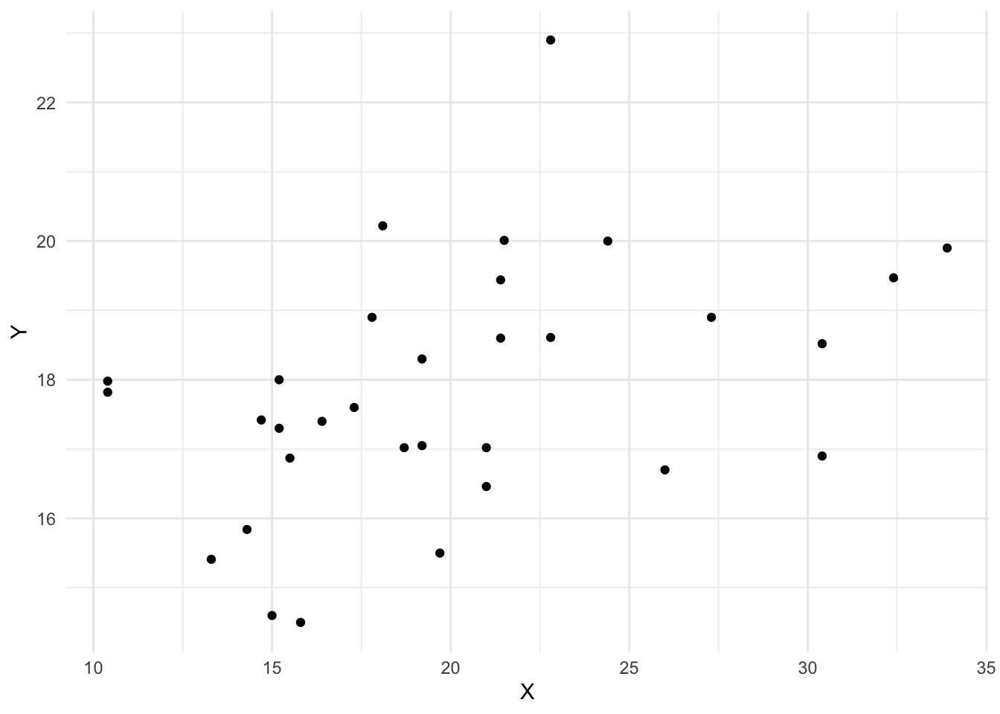
We fit a model and plot the predicted values:
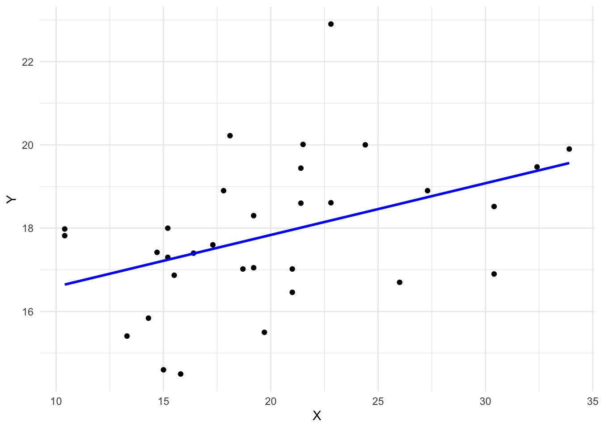
How can we evaluate whether this line is accurate? The most common approach is to subtract the actual \(Y_{i}\) score of each respondent from the predicted \(\hat{Y_{i}}\) for each respondent:
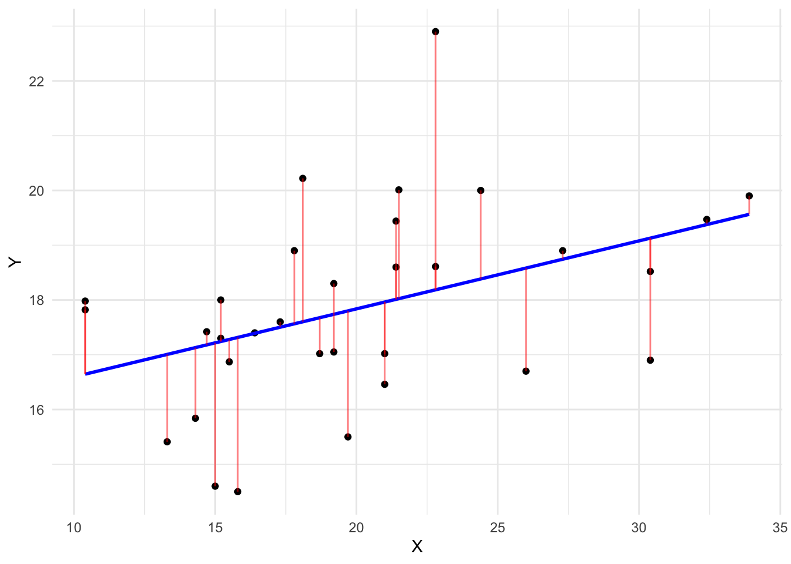
After the subtraction occurs, we square these differences (because squaring removes the negative and positive sign of subtracting over and under predicted values), calculate the average error and take the square root of that. Social scientists are aware of this. Here’s the formula, in case this sounds familiar:
\[ RMSE = \sqrt{\sum_{i = 1}^n{\frac{(\hat{y_{i}} - y_{i})^2}{N}}} \]
In machine learning, this metric is used to identify models which have the lowest predictive error. For example, let’s fit two linear models using the pisa data set. One will regress math_score (mathematics test score) on scie_score and read_score (they each measure test scores in science and literacy respectively) and the other will regress math_score on all variables excluding science and literacy scores.
# Model with only scie_score and read_score
mod1 <-
pisa %>%
tidyflow(seed = 4113) %>%
plug_formula(math_score ~ scie_score + read_score) %>%
plug_split(initial_split) %>%
plug_model(set_engine(linear_reg(), "lm"))
# Model with all variables except scie_score and read_score
mod2 <-
mod1 %>%
replace_formula(math_score ~ . - scie_score - read_score)
# Fit the models
res1 <- fit(mod1)
res2 <- fit(mod2)
# Calculate the RMSE of model 1
rmse_1 <-
res1 %>%
predict_training() %>%
rmse(math_score, .pred) %>%
pull(.estimate)
# Calculate the RMSE of model 2
rmse_2 <-
res2 %>%
predict_training() %>%
rmse(math_score, .pred) %>%
pull(.estimate)
c("RMSE first model" = rmse_1, "RMSE second model" = rmse_2)## RMSE first model RMSE second model
## 30.73546 40.72052The first model has the lowest error. The \(RMSE\) can be interpreted as the average error in the metric of the dependent variable. For example, the first \(RMSE\) can be interpreted as having an average error of 30.74 points in mathematics.
The \(RMSE\) has the benefit of penalizing large errors more than small errors. In other words, taking the square root of a big number penalizes this large number more than taking the same square root of a small number. Let’s show an example.
The result of sqrt(1000) is 31.62 whereas the result for sqrt(100) is 10. The difference in the decrease is not proportional to the difference between 1000 and 100. The difference between 1000 and 100 is much larger than the difference between 31.62 and 10 because sqrt penalizes more the number 1000. This property makes the \(RMSE\) attractive to work with when you don’t care about the proportion of the errors.
In the case of our math_score variable, this is not desirable since having a \(RMSE\) of 30 is twice as worse as having a \(RMSE\) of 15. It doesn’t make sense to penalize large errors more in test scores. Whenever the scale of the dependent variable does reflects this, it might be worth exploring other loss functions, such as the \(MAE\).
4.1.2 Mean Absolute Error
The Mean Absolute Error or \(MAE\) is very similar to the \(RMSE\). It calculates the average error in the same metric as the dependent variable. However, instead of squaring the difference and taking the square root, it takes the absolute value of the difference:
\[ MAE = \sum_{i = 1}^n{\frac{|\hat{y_{i}} - y_{i}|}{N}} \]
This approach doesn’t penalize any values and just takes the absolute error of the predictions. Let’s calculate the \(MAE\) for our previous two models:
mae1 <-
res1 %>%
predict_training() %>%
mae(math_score, .pred) %>%
pull(.estimate)
mae2 <-
res2 %>%
predict_training() %>%
mae(math_score, .pred) %>%
pull(.estimate)
c("MAE first model" = mae1, "MAE second model" = mae2)## MAE first model MAE second model
## 24.42091 32.21999The \(MAE\) is fundamentally simpler to interpret than the \(RMSE\) since it’s just the average absolute error. The main difference with respect to the \(RMSE\) is that it does not penalize larger errors but rather allows each error to have it’s absolute value.
4.2 Binary loss functions
Binary loss functions are more elaborate than the ones discussed in the continuous loss function section. In particular, it introduces many terms which social scientists are rarely aware of. The pillar of these new terms is the confusion matrix, the topic we’ll be discussing next.
4.2.1 Confusion Matrices
A confusion matrix is a very simple concept. It is the table comparing the predicted category of a model versus the actual category. Let’s work out an example.
The city of Berlin is working on developing an ‘early warning’ system that is aimed at predicting whether a family is in need of childcare support. They are trying to build this system on a dataset they’ve been collecting for the past 10 years where they have all families in the city. Families which received childcare support are flagged with a 1 and families which didn’t received childcare support are flagged with a 0. Below is a figure showing how this fake data would look like:

The column DV is whether a family has received childcare support and X1 and X2 are independent variables that are assumed to be correlated with receiving childcare support. Suppose we fit a logistic regression that returns a predicted probability for each family:
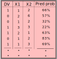
For simplicity, we could assign a 1 to every respondent who has a probability above 0.5 and a 0 to every respondent with a probability below 0.5:
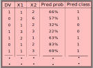
Confusion matrices are two-way tables between the real category (this is the column DV in the data) and predicted category (this is the column Pred class in the data):
On the left axis, we have the predicted values of whether a family received childcare support (a 1 or a 0) and on the top axis of the table the true value of whether a family received childcare. This template is easy enough to calculate with our own data. Let’s do that using the labels of each cell (lable (A), (B), etc…):
Let’s focus on the top row. In cell (A), three respondents received childcare support that were predicted correctly by the logistic regression. These are rows 1, 5 and 7 from the data. Cell (A) corresponds to those that had a 1 and got predicted a 1. To the right side of this cell, cell (B) has those that didn’t receive childcare support but the model predicted they did. That is, they had a 0 in the dependent variable but the model predicted a 1. These were rows 2 and 6 from the data.
For the bottom row, cell (C) contains those which received childcare support but the model predicted they didn’t. This is only one respondent from our data, namely row 4. Finally, cell (D) contains those which didn’t receive childcare support and the model predicted accurately that they didn’t receive childcare support. This corresponds only to row 3.
These cells in the confusion matrix are used to generate several loss functions. The most standard is the accuracy of the model. The accuracy is the sum of all correctly predicted rows divided by the total number of predictions:

In our example, the correct predictions are in cell (A) and cell (B). Cell (A) contains the number of families with childcare support that were assigned childcare support successfully. Cell (B) contains the number of families without childcare support that were correctly predicted to not have childcare support. We can calculate the accuracy as the sum of these two cells divided by all cells:
- Accuracy: \((3 + 1) / (3 + 1 + 2 + 2) = 50\%\)
If you randomly picked a person from this dataset, you can be 50% confident that you can predict whether they received childcare support. This is not a good accuracy. By chance alone, we could also achieve a prediction accuracy of 50% if we made repeated predictions. That is why in certain scenarios, the sensitivity and specificity of a model is often a more important loss function.
The sensitivity of a model is a fancy name for the true positive rate. For the accuracy calculations we compared those that were correctly predicted (regardless of whether they received childcare support or whether they didn’t). Sensitivity measures the same thing but only focused on the true positive rate:
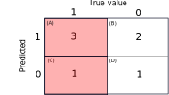
That is, we take those which were predicted childcare support correctly and divide them by the total number of respondents with childcare support. In substantive terms, it can be interpreted as: out of all the people who received childcare support, how many were classified correctly? With our small confusion matrix we can calculate it manually:
- Sensitivity: \(3 / (3 + 1) = 75\%\)
This true positive rate of 75% is substantially higher than the 50% of the accuracy. However, we’re measuring different things. The sensitivity calculation completely ignores the accuracy of those which didn’t receive childcare support. For that, the opposite calculation is called specificity.
The specificity of a model measures the true false rate. That is, out of all the respondents who didn’t receive childcare, how many were classified correctly? Our confusion matrix highlights the two corresponding cells:
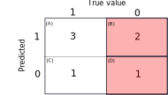
We know that the cell (D) contains those which were correctly assigned no childcare support and cell (B) contains those which were incorrectly assigned childcare support when in fact they didn’t have it. We can calculate specificity the same way we did sensitivity:
- Specificity: \(1 / (1 + 2) = 33\%\)
The model has a 33% accuracy for those who didn’t receive childcare support. In other words, if you randomly picked someone who didn’t receive childcare support, you can be 33% confident that you can predict their childcare support status.
The model is biased towards predicting better childcare support and negatively biased towards those that didn’t receive childcare support. But this is och, as long as your research question is aligned with your loss function.
For example, it might be more costly in terms of time and money for the city of Berlin to fail to give childcare support to a family that needs it and thus we would prefer to improve the sensitivity of this model. Giving childcare support to a family that doesn’t need it is better than not giving childcare support to a family that needs it. This discussion is just to exemplify that having poor accuracy or poor measures of other types of loss functions depends on your research question rather than the actual value.
Although the previous exercises seemed easy enough, they are contingent on one assumption: that the cutoff value in the probabilities is 0.5. Remember that we assumed that everyone who had a probability above 50% would be assigned a 1 and otherwise a 0. That’s a strong assumption. Perhaps the real cutoff should be 0.65. Or it should be something more conservative, such as 0.40. To address this problem, we have to look at the sensitivity and specificity for different thresholds. This is where the ROC curve comes in.
4.2.2 ROC Curves and Area Under the Curve
The ROC curve (ROC means Receiver Operating Characteristic Curve) is just another fancy name for something that is just a representation of sensitivity and specificity. Let’s work out a manual example.
Suppose we have the same example of trying to predict whether a family will need childcare support. In that example, we calculated the sensitivity and specificity but assuming that the threshold for being 1 in the probability of each respondent is 0.5.
We could assess how much the sensitivity and specificity of the model changes by changing this cutoff to 0.3 and 0.7:
# Create some very fake data for childcare_support
# Do not interpret this as real!!
childcare_support <-
USArrests %>%
mutate(dv = factor(ifelse(Rape >= mean(Rape), 1, 0))) %>%
as_tibble() %>%
select(dv, everything(), -Rape)
names(childcare_support) <- c("dv", paste0("X", 1:3))
# Define the tidyflow with the logistic regression
tflow <-
childcare_support %>%
tidyflow(seed = 23151) %>%
plug_split(initial_split) %>%
plug_formula(dv ~ .) %>%
plug_model(set_engine(logistic_reg(), "glm"))
# Run the model
res <- tflow %>% fit()
# Get the probabilities
res1 <-
res %>%
predict_training(type = "prob")
# Calculate the sensitivity and specificity
# of different thresholds
all_loss <-
lapply(c(0.3, 0.5, 0.7), function(x) {
res <-
res1 %>%
mutate(pred = factor(as.numeric(.pred_1 >= x)))
sens <- sensitivity(res, dv, pred)
speci <- specificity(res, dv, pred)
data.frame(cutoff = x,
sensitivity = round(sens$.estimate, 2),
specificity = round(speci$.estimate, 2))
})
res_loss <- do.call(rbind, all_loss)
res_loss## cutoff sensitivity specificity
## 1 0.3 0.74 0.87
## 2 0.5 0.87 0.80
## 3 0.7 0.96 0.53The result contains the corresponding sensitivity and specificity when assigning a 1 or a 0 based on different cutoffs. For example, assigning a 1 if the probability was above 0.3 is associated with a true positive rate (sensitivity) of 0.74. In contrast, switching the cutoff to 0.7, increases the true positive rate to 0.95, quite an impressive benchmark. This means that if we randomly picked someone who received childcare support, our model can accurately predict 95% of the time whether they did receive childcare support.
However, at the expense of increasing sensitivity, the true false rate decreases from 0.87 to 0.53. It seems that we need to find the most optimal value between these two accuracy measures. We want a cutoff that maximizes both the true positive rate and true false rate. For that, we need to try many different values from 0 to 1 and calculate the sensitivity and specificity:
all_loss <-
lapply(seq(0.01, 0.99, by = 0.01), function(x) {
res <-
res1 %>%
mutate(pred = factor(as.numeric(.pred_1 >= x)))
sens <- sensitivity(res, dv, pred)
speci <- specificity(res, dv, pred)
data.frame(cutoff = x,
sensitivity = sens$.estimate,
specificity = speci$.estimate)
})
res_loss <- do.call(rbind, all_loss)
res_loss## cutoff sensitivity specificity
## 1 0.01 0.2608696 1.00000000
## 2 0.02 0.3478261 1.00000000
## 3 0.03 0.3913043 1.00000000
## 4 0.04 0.3913043 1.00000000
## 5 0.05 0.3913043 1.00000000
## 6 0.06 0.3913043 1.00000000
## 7 0.07 0.3913043 1.00000000
## 8 0.08 0.3913043 1.00000000
## 9 0.09 0.4347826 1.00000000
## 10 0.10 0.5217391 0.93333333
## 11 0.11 0.5652174 0.93333333
## 12 0.12 0.5652174 0.93333333
## 13 0.13 0.6086957 0.93333333
## 14 0.14 0.6086957 0.93333333
## 15 0.15 0.6086957 0.93333333
## 16 0.16 0.6086957 0.93333333
## 17 0.17 0.6086957 0.93333333
## 18 0.18 0.6086957 0.93333333
## 19 0.19 0.6521739 0.93333333
## 20 0.20 0.6521739 0.86666667
## 21 0.21 0.6521739 0.86666667
## 22 0.22 0.6521739 0.86666667
## 23 0.23 0.6956522 0.86666667
## 24 0.24 0.6956522 0.86666667
## 25 0.25 0.7391304 0.86666667
## 26 0.26 0.7391304 0.86666667
## 27 0.27 0.7391304 0.86666667
## 28 0.28 0.7391304 0.86666667
## 29 0.29 0.7391304 0.86666667
## 30 0.30 0.7391304 0.86666667
## 31 0.31 0.7391304 0.86666667
## 32 0.32 0.7391304 0.86666667
## 33 0.33 0.7391304 0.86666667
## 34 0.34 0.7391304 0.86666667
## 35 0.35 0.7391304 0.86666667
## 36 0.36 0.7391304 0.80000000
## 37 0.37 0.7391304 0.80000000
## 38 0.38 0.7391304 0.80000000
## 39 0.39 0.7391304 0.80000000
## 40 0.40 0.7826087 0.80000000
## 41 0.41 0.7826087 0.80000000
## 42 0.42 0.7826087 0.80000000
## 43 0.43 0.8260870 0.80000000
## 44 0.44 0.8260870 0.80000000
## 45 0.45 0.8695652 0.80000000
## 46 0.46 0.8695652 0.80000000
## 47 0.47 0.8695652 0.80000000
## 48 0.48 0.8695652 0.80000000
## 49 0.49 0.8695652 0.80000000
## 50 0.50 0.8695652 0.80000000
## 51 0.51 0.8695652 0.80000000
## 52 0.52 0.8695652 0.73333333
## 53 0.53 0.8695652 0.73333333
## 54 0.54 0.9130435 0.73333333
## 55 0.55 0.9130435 0.73333333
## 56 0.56 0.9130435 0.73333333
## 57 0.57 0.9130435 0.73333333
## 58 0.58 0.9130435 0.73333333
## 59 0.59 0.9130435 0.73333333
## 60 0.60 0.9130435 0.73333333
## 61 0.61 0.9130435 0.73333333
## 62 0.62 0.9130435 0.73333333
## 63 0.63 0.9130435 0.73333333
## 64 0.64 0.9130435 0.60000000
## 65 0.65 0.9565217 0.60000000
## 66 0.66 0.9565217 0.60000000
## 67 0.67 0.9565217 0.60000000
## 68 0.68 0.9565217 0.60000000
## 69 0.69 0.9565217 0.60000000
## 70 0.70 0.9565217 0.53333333
## 71 0.71 1.0000000 0.53333333
## 72 0.72 1.0000000 0.53333333
## 73 0.73 1.0000000 0.53333333
## 74 0.74 1.0000000 0.53333333
## 75 0.75 1.0000000 0.53333333
## 76 0.76 1.0000000 0.53333333
## 77 0.77 1.0000000 0.53333333
## 78 0.78 1.0000000 0.53333333
## 79 0.79 1.0000000 0.53333333
## 80 0.80 1.0000000 0.53333333
## 81 0.81 1.0000000 0.53333333
## 82 0.82 1.0000000 0.53333333
## 83 0.83 1.0000000 0.53333333
## 84 0.84 1.0000000 0.53333333
## 85 0.85 1.0000000 0.53333333
## 86 0.86 1.0000000 0.46666667
## 87 0.87 1.0000000 0.46666667
## 88 0.88 1.0000000 0.46666667
## 89 0.89 1.0000000 0.40000000
## 90 0.90 1.0000000 0.40000000
## 91 0.91 1.0000000 0.40000000
## 92 0.92 1.0000000 0.40000000
## 93 0.93 1.0000000 0.33333333
## 94 0.94 1.0000000 0.26666667
## 95 0.95 1.0000000 0.20000000
## 96 0.96 1.0000000 0.13333333
## 97 0.97 1.0000000 0.13333333
## 98 0.98 1.0000000 0.06666667
## 99 0.99 1.0000000 0.06666667This result contains the sensitivity and specificity for many different cutoff points. These results are most easy to understand by visualizing them:
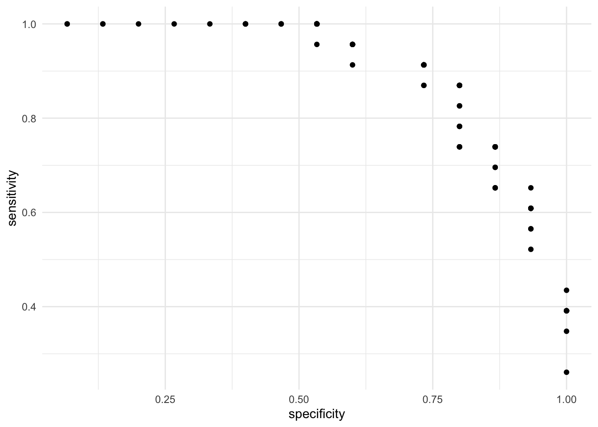
On the X axis we have the true false rate (specificity) and on the Y axis we have the true positive rate (sensitivity). As expected, there is a trade off between the two. That is, cutoffs that improve the specificity does so at the expense of sensitivity. This is evident from the negative correlation in the scatterplot. Instead of visualizing the specificity as the true negative rate, let’s subtract 1 such that as the X axis increases, it means that the error is increasing:
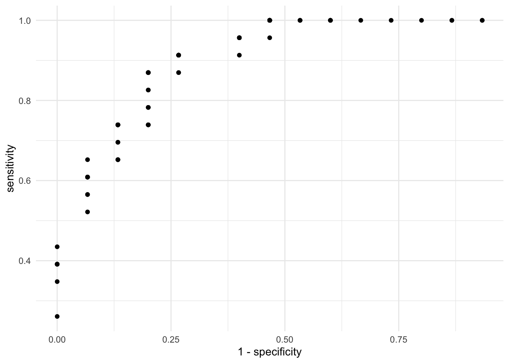
The ideal result from this plot is that most points cluster on the top left quadrant. This would mean that the sensitivity is high (the true positive rate) and the specificity is high (because \(1 - specificity\) will switch the direction of the accuracy to the lower values of the X axis). Let’s add two lines to the plot. One that joins all the dots, such that it’s clearer where the improvements are and a diagonal line:
res_loss %>%
ggplot(aes(1 - specificity, sensitivity)) +
geom_point() +
geom_line() +
geom_abline(intercept = 0, slope = 1, linetype = "dashed") +
scale_y_continuous(limits = c(0, 1)) +
theme_minimal()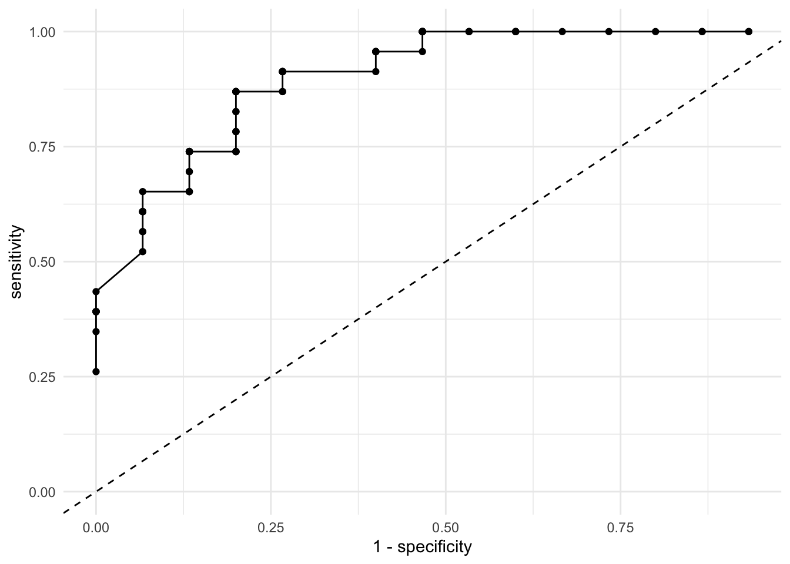
Most statistical software will calculate this plot for you, but you just calculated it manually! These plots and statistics are sometimes treated as mystified but by writing them down step by step you can truly understand the intuition behind them. Let’s allow R to calculate this for us automatically:
p1 <-
res1 %>%
roc_curve(dv, .pred_1) %>%
mutate(.threshold = round(.threshold, 2)) %>%
ggplot(aes(1 - specificity, sensitivity)) +
geom_line() +
geom_point(aes(text = paste0("Cutoff: ", .threshold)), alpha = 0) +
geom_abline(intercept = 0, slope = 1, linetype = "dashed") +
theme_minimal()
p1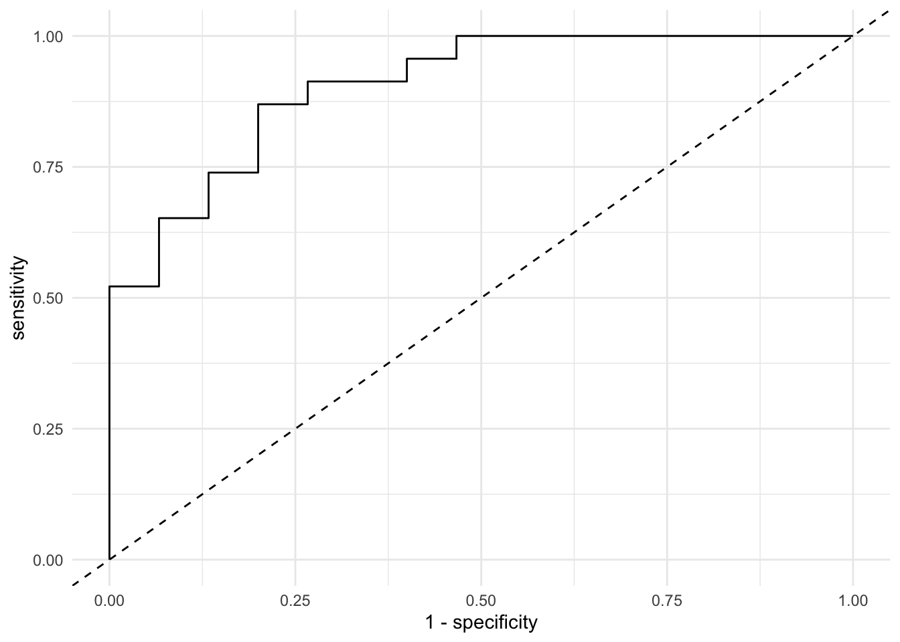
Although we built this plot from scratch, there is one thing we’re missing: the actual cutoff points! Here we’re visualizing the sensitivity and specificity of each cutoff point but it’s not entirely intuitive because we cannot see these cutoff values. Let’s make that plot interactive:
You can now hover over the line and check the actual cutoff point associated with each sensitivity and specificity. Let’s suppose that for us, it’s more important to have a high sensitivity than a higher specificity. However, we want a specificity rate of at least 80%. The cutoff 0.44 offers both a sensitivity of 86% and a \(1 - specificity\) of 20%, which translates to a specificity of 80%.
Although we’ve chosen this threshold from a very manual approach, there are formulas that already choose the most optimal combination for you. Due to the lack of time in the course, we won’t be covering them but feel free to look them up. One example is the Youden Index.
The last loss function we’ll discuss is a very small extension of the ROC curve. It’s called the Area Under the Curve or \(AUC\). As the name describes it, the \(AUC\) is the percentage of the plot that is under the curve. For example:
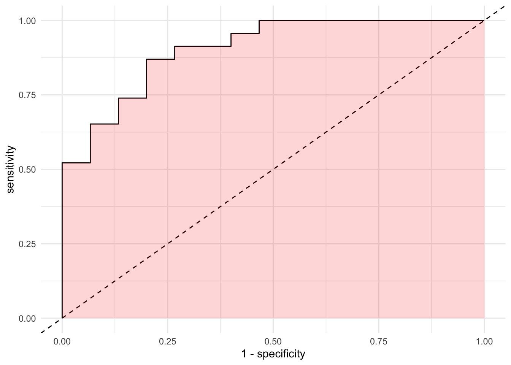
As we described earlier, as the more points are located in the top left quadrant, the higher the overall accuracy of our model. If the points are very close to the top left quadrant, the area under the curve will be higher. As expected, higher \(AUC\) values reflect increasing accuracy. We can let R workout the details with our predictions:
## # A tibble: 1 x 3
## .metric .estimator .estimate
## <chr> <chr> <dbl>
## 1 roc_auc binary 0.904It seems that 90% of the space of the plot is under the curve.